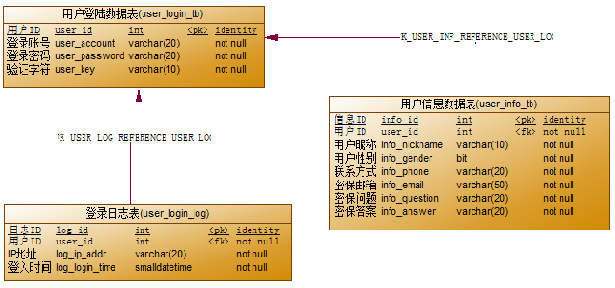

设计一个用户表:
用户登录数据表
/*==============================================================*/
/* Table: user_login_tb */
/*==============================================================*/
create table user_login_tb (
user_id int identity,
user_account varchar(20) not null,
user_password varchar(20) not null,
user_key varchar(10) not null,
constraint PK_USER_LOGIN_TB primary key (user_id)
)
用户信息数据表
/*==============================================================*/
/* Table: user_info_tb */
/*==============================================================*/
create table user_info_tb (
info_id int identity,
user_id int not null,
info_nickname varchar(10) not null,
info_gender bit not null,
info_phone varchar(20) not null,
info_email varchar(50) not null,
info_question varchar(20) not null,
info_answer varchar(20) not null,
constraint PK_USER_INFO_TB primary key (info_id)
)
登录日志表
/*==============================================================*/
/* Table: user_login_log */
/*==============================================================*/
create table user_login_log (
log_id int identity,
user_id int not null,
log_ip_addr varchar(20) not null,
log_login_time smalldatetime not null,
constraint PK_USER_LOGIN_LOG primary key (log_id)
)
PD工具设计表
